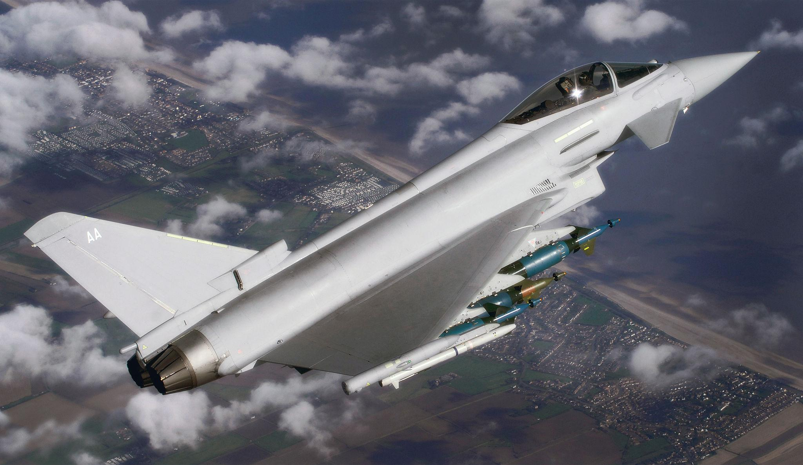

Favourite Aircraft
The Ones That Define the Sky.
The Zero was a revelation when it first entered service in 1940 — a carrier-based fighter with extraordinary range, maneuverability, and climb rate that no Allied aircraft could match in the opening months of the Pacific War. Designed by the brilliant Jiro Horikoshi under impossible constraints — lightweight, long range, highly maneuverable — it achieved a near-perfect balance that shocked the world. Allied pilots were instructed never to dogfight a Zero at low speed, as it would simply turn inside any opponent. The Zero symbolises what can be achieved through pure engineering ingenuity under extreme resource limitations. Produced in over 10,000 units, it remains one of the most iconic fighter aircraft ever built.

My favourite modern fighter — and not by a small margin. The Typhoon is a masterpiece of collaborative European aerospace engineering. A delta-canard unstable design with fly-by-wire controls, it achieves agility that would be impossible in a stable aircraft. The EJ200 engines give it genuine supercruise capability — supersonic flight without afterburner — making it one of the most energy-efficient fighters in service today. Built by four nations (UK, Germany, Italy, Spain) through the Eurofighter consortium, the Typhoon proves what happens when top engineering teams work together. In the air superiority role it is genuinely dangerous, and its growing ground attack capability through the Striker II helmet and CAPTOR-E AESA radar upgrades make it a true multirole platform. Absolutely beautiful in flight — the delta-canard shape is one of the most aerodynamically perfect forms ever put in the sky.
Photo: © Crown Copyright / UK MOD via Wikimedia Commons (OGL v1.0)
What I Follow
Aviation Interests.
How lift is generated, how jet engines work, aerodynamics, structural design — the physics and engineering behind why aircraft fly and how they push limits.
WWII Pacific air campaigns, the dawn of the jet age, Cold War arms race in the sky — aviation history is inseparable from the history of the modern world.
Stealth coatings, AESA radars, thrust vectoring, fly-by-wire, helmet-mounted displays — modern 4th and 5th gen fighters are the most complex machines humans have ever built.